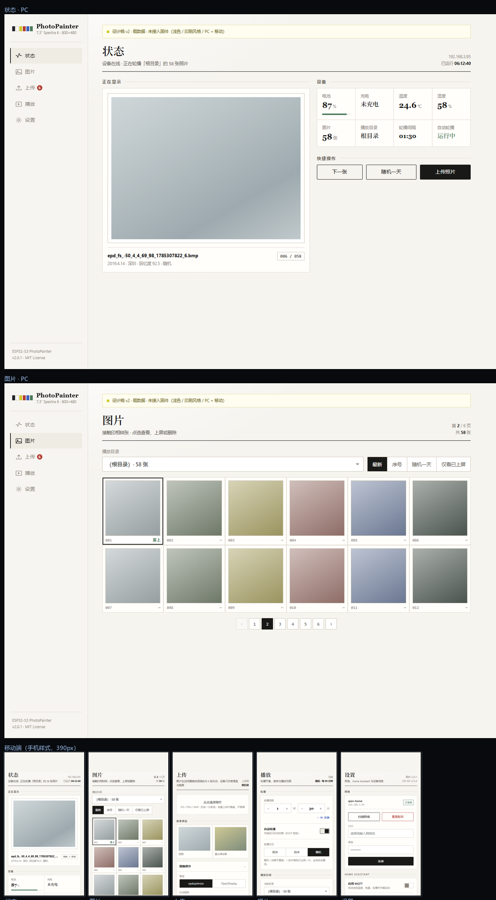
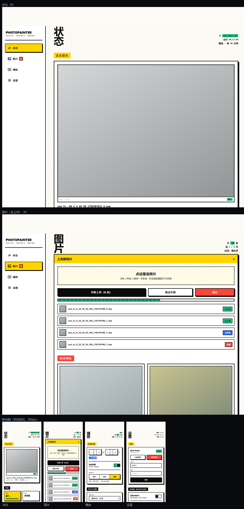

设计选型 · 已定稿
相框仪表盘 · 两版设计
信息架构完全一样（状态 · 图片（含上传）· 播放 · 设置），只换视觉语言。
已选定 B 版（新粗野主义），内容宽度取「宽」档 1600px；
A 版（纸张 / 印刷）保留作参考，不再改动。
A · 纸张 / 印刷 · 保留参考
浅色、克制，像印刷品
适合长时间看，信息密度高也不累。
- 衬线大标题 + 发丝分隔线，不用圆角卡片和阴影
- 数据区做成「规格表」，大号衬线数字
- 当前照片像展签；图片列表像接触印相样张
- 墨水屏六色做成小色标点缀

↑ 点图或下面的按钮，在新标签打开可交互版本
打开 A 版体验 →
B · 新粗野主义 · ✓ 已选定（宽度 1600）
白底黑粗边、硬投影，很跳
辨识度高、有意思；代价是元素更重、更"吵"。
- 3px 纯黑边框 + 硬投影（无模糊），按钮按下会"塌陷"
- 满饱和的墨水屏六色当大色块用，顶栏一条六色胶带
- 超大竖排标题、反白标签块、印章式状态贴纸
- 方格纸底纹，条纹填充的进度条

↑ 点图或下面的按钮，在新标签打开可交互版本
打开 B 版体验 →
如果想再细看，可以注意这几点
- 「图片」页：我把上传和图片列表合并了 —— 传完就地刷新下方列表并给新图打「新」标记，不用切页。这是两版共有的改动。
- 切到「播放」页：轮播间隔是「时」「分」两个步进器，不用敲冒号，手机上点开就是数字键盘。
- 用手机也开一次：两版都是三档响应式 —— 电脑是左侧栏、平板是顶栏、手机自动变底部页签。手机上观感差别更大。
- 页签、开关、加减号都能点，弹层和提示也会响应；但数据是假的，没接固件。
- 页面顶部那条"设计稿 · 假数据"提示条，正式移植时会删掉。